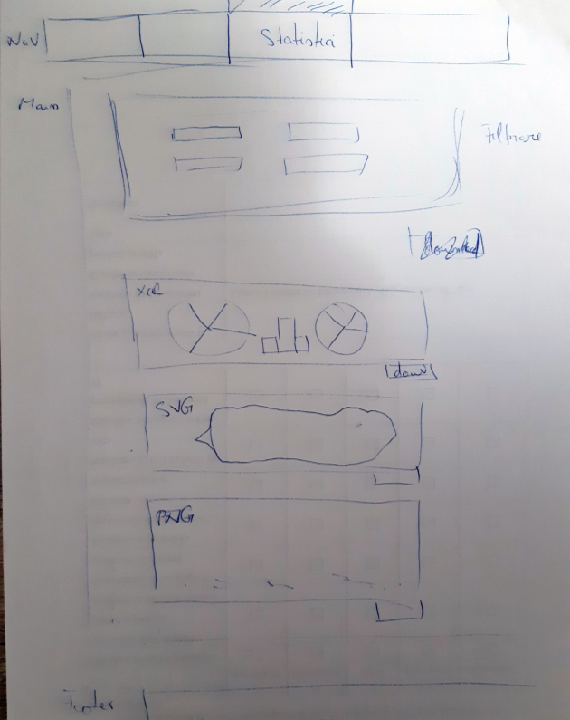
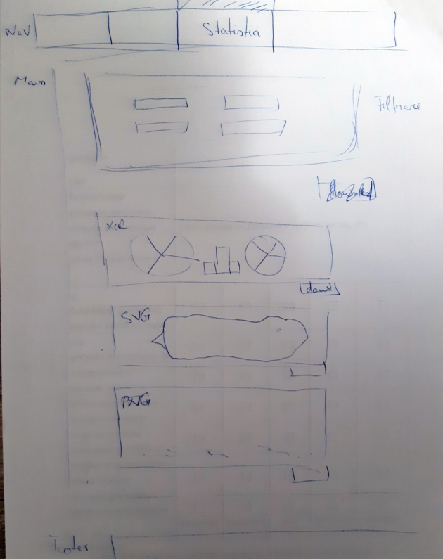

3. Structure
3.1. Microservices
The application is structured in four microservices depending on the functionalities:
- Data filter
- Data viewer
- Public API
- Data Administration
3.1.1. Data filter
It is the only component which has access to the events table from the database. Because this table can be very large, operations must be optimized as much as possible. This component has the role of extracting accidents according to different filters. This filters are sent as parameter in a GET request and the response to the events is returned in JSON format.
3.1.2. Data viewer
Acest microserviciu se ocupa de interfaţa aplicaţiei/sitului Web. Data viewr se foloseste de informatiile extrase de pe partea de back-end cu ajutorul microserviciului data filter, pentru a afisa intr-un mod cat mai clar informatiile pe partea de front-end.
Utilizatorul poate filtra datele dupa cum doreste pentru a putea extrage informatiile de care are nevoie, ori sub forma de chart in format svg, png, ori in format csv in care i se ofera un document cu ce coloana a selectat si valoarea pentru aceasta, totodata, acesta poate vedea informatii legate de accidente si mai poate vizualiza o harta ce se coloreaza in functie de numarul de accidente din fiecare stat.
3.1.3. Public API
Public API component is handling of requests from external applications and provides access to the data in the database by returning it in a structured way in the form of JSON.
3.1.4. Data Administration
Data Administration component allows authorized users to add events to the database.
3.2. User interface
3.2.1. Interface components
Interfata site-ului este impartita in trei pagini principale:
- Home
- See all
- Statistics
3.2.1.1.Home page
Pe pagina principala, utilizatorul poate vedea o reprezentare cartografica a evenimentelor, fiecare stat este colorat in functie de numarul de accidente, acest numar este extras din baza de date si pus intr-un fisier de tip jason, iar apoi cu ajutorul unui api('leaflet') se creeaza harta. Cu cat sunt mai multe accidente cu atat culoarea este mai inchisa. Tot in acelasi loc apare specificata movatia alegerii temei si cateva informatii despre numarul accidentelor din Statele Unite ale Americii.
Pe partea de back-end pagina are o singura componenta importanta si anume map controlerul ce se ocupa de prelucrea datelor si crearea hartii.
3.2.1.2.See all page
Aceasta pagina ofera informatii legate de accidentele ce au avut loc si se regasesc in baza de date. Containerele cu informatii pot fi sortate crescator sau descrescator dupa numele statelor sau dupa data si pot fi filtrate in functie de stat oras, county si data la care au avut loc. Pentru eficienta sunt incarcate cate zece evenimente pe pagina, iar la final apare un meniu de paginare pentru a putea selecta alta pagina cu alte 10 evenimente.
3.2.1.3.Statistics page
Pagina statisticilor este imparatita in doua compponente principale: prima componenta cuprinde meniul de filtrare, in timp ce a doua apare in momentul in care sunt completate toate datel si ofera o reprezentare grafica a datelor in functie de cum vrea utilizatorul sa fie filtrate si cum vrea sa apara. Meniul de filtrare pentru a fi mai accesibil si mai usor de folosit este impartit in patru submeniuri(Custom filters, Presence filters, Data filters si Between filters).
Primul submeniu, cuprinde filtre ce contin foarte putine valori, acestea sunt de tipul (zi-noapte, dreapta-stanga etc.). Pentru optimizare, am decis sa le punem separat deoarece nu avea sens sa mai interogam baza de date pentru niste valori ce nu pot avea alta valoare decat acestea prestabilite.
Al doilea submeniu, cuprinde filtre de tip boolean(true, false), poti alege daca a avut loc sau nu filtrul respectiv(daca au fost sau nu daune, accidente etc.)
Al doilea submeniu, cuprinde filtre de tip boolean(true, false), poti alege daca a avut loc sau nu filtrul respectiv(daca au fost sau nu daune, rani etc.)
Cel de al treilea submeniu, cuprinde filtre ce depind exclusiv de baza de date, cum ar fi (nume de state, orase, nume de strazi etc.).
Ultimul submeniu contine filtre numerice, ce pot fi setate intre valoarea minima a filtrului respectiv din baza de date si valoarea maxima. De exemplu: viteza vantului, temperatura, latitudinea, longitudinea etc.
Dupa ce sunt completate toate aceste filtre, utillizatorul trebuie sa aleaga un tip de chart(bar-plot, pie-chart, lollipop-chart) si ce informatii doreste sa apara in acel chart(aceste lucruri se valideaza pe partea de front-end, iar daca nu sunt introduse valori din intervalul specificat, sau nu sunt completate ultimele specificatii legate de tipul de chart si ce informatii apar, sunt returnate mesaje de avertizare si nu va putea fi apasat butonul de submit).
In momentul in care toate filtrele au fost completate, apare un chart container ce contine reprezentarea grafica a chartului si un meniu de unde se poate alege modalitatea de export in formatele png, svg sau csv. In crearea graficelor a fost folosita libraria D3, pentru grafice in format vectorial, pentru fiecare tip de grafic se genereaza un document csv cu datele necesare, iar mai apoi D3 prelueaza acaeste informatii si construieste graficul.
Am ales acest tip de reprezentare a paginii deoarece ne-am gandit ca este destul de intuitiva pentru utilizator si tot odata ii ofera libertate totala in a selecta filtrele dupa cum doreste. Totodata toate aceste submeniuri sunt inchise la inceput, pentru ca pagina sa nu fie foarte incarcata si apar in momentul in care cineva doreste sa le modifice (by default sunt setate pe All, adica sa le ia pe toate).
Pe partea de back-end clasele principale folosite sunt ChartCointainer si FilterContainer, prima clasa este pentru partea de statisci, care ajuta la crearea containerului in care vor fi puse, iar a doua creeaza containere pentru filtere, fiecare container are ca atribute id, title, tipul de container(between, cu mai multe optiuni, sau cu o singura optiune) si o lista cu obiecte de tipul FilterContainerRow ce reprezinta valorile din container si in functie de tipul containerlui pot fi(numerice, check-box-uri, radio-uri), in aceeasi ordine cu tipul de container specificat mai sus. La final controlerul de la Statistics se ocupa de prelucrarea datelor si la final este inclus view-ul pentru pagina de statistici.
3.2.2.Interface evolution
In primele saptamani de dupa ce am ales tema proiectului, ne-am intalnit pentru a incerac sa desenam o schema a aplicatiei noastre: cam de ce anume o sa avem nevoie, cam cum o sa arate paginile si cel mai important cum o sa decurga interactiunea cu utilizatorul. La inceput eram foarte optimisti si chiar am vrut sa facem ceva super interesan, ceva ca o retea sociala in care fiecare utilizator poate posta accidente si ceilalti pot spune cat de veridica este postarea respectiva, iar cele adevarate sa primeasca acordul adminului, urmand ca cele false sa fie sterse.
Dupa ceva timp, ne-am dat seama ca incercand sa facem foarte multe lucruri pierdem din functionalitatile ce trebuia sa le contina aplicatia, astfel am decis sa ne concentram mai mult pe partea de functionalitate si sa facem ce este necesar, urmand sa adaugamm lucruri noi in limita timpului disponibil.
Acestea sunt niste schite ale aplicatiei dupa prima intalnire:


 


Dupa am mai avut o intalnire in care am stabilit cum sa arate meniul de filtrari de pe pagina de statistici, la inceput meniul era simplist si avea foarte putine filtre, dupa ne-a venit ideea ca ar trebui sa il structuram pe categorii.
Mai jos este o imagine cu felul in care arata meniul de filtrare:

Pe parte de back-end, ca si structura, la inceput sitelul era format doar din cateva fisiere html, css si js, dupa am facut trecerea la MVC si am introdus php-ul ca in final sa ajungem sa impartim aplicatia in microservicii si sa ne ocupam de partea de API.